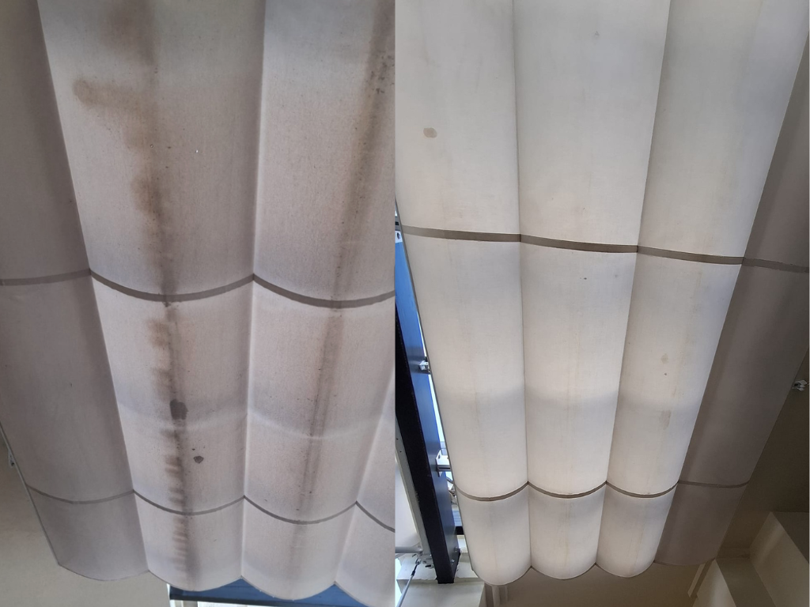
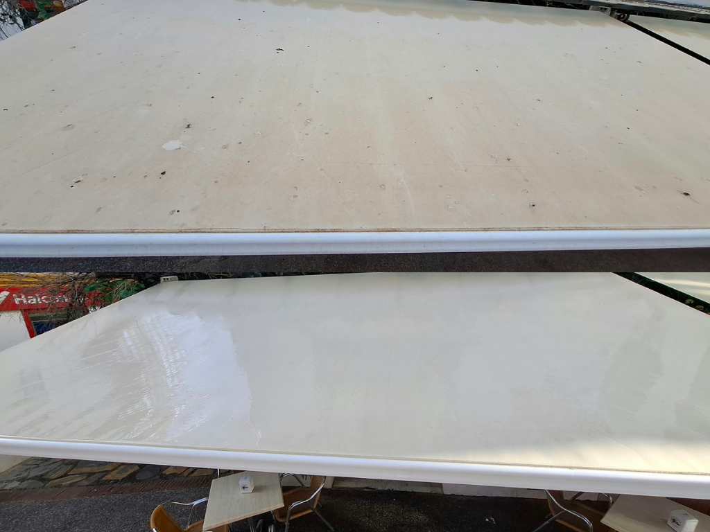
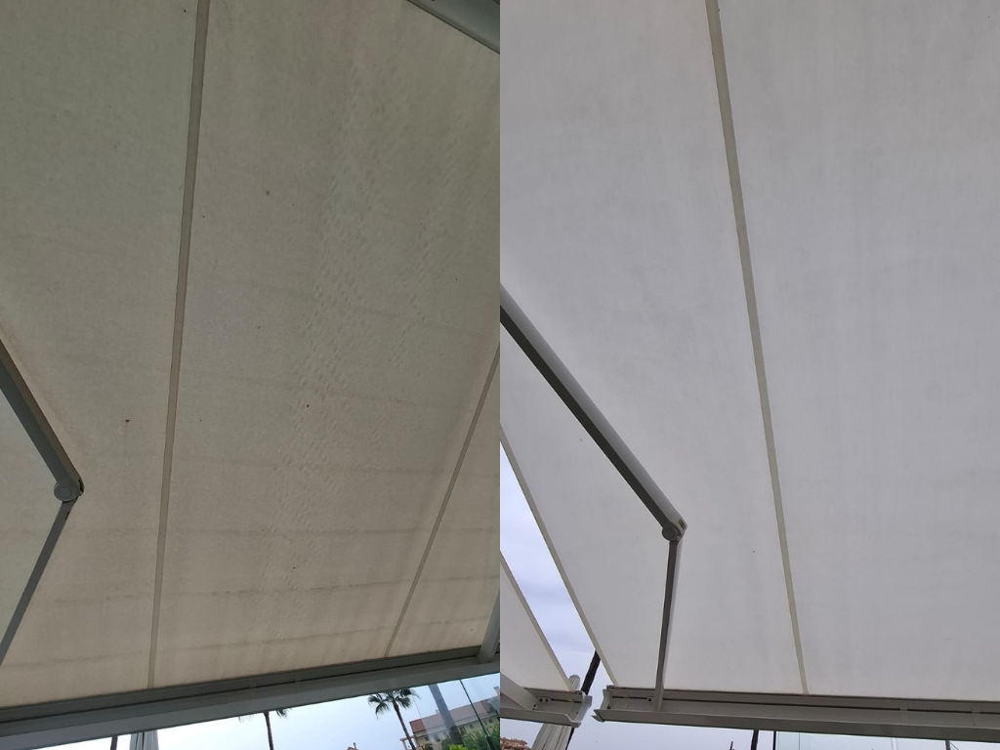

Cuidamos tus
toldos.Awning care,
beautifully done.
Toldos · Tejidos exteriores · Sombrillas · Espacios residenciales y comercialesAwnings · Outdoor fabrics · Parasols · Residential & commercial spaces
Antes y después.Before & after.



TRABAJOS REALES · FCTREAL PROJECTS · FCT
Así cuidamos tus toldos.How we care for your awnings.
Fotografías reales de nuestro trabajo: evaluamos el material y la suciedad, aplicamos un tratamiento adecuado y aclaramos con cuidado. El método se adapta al tipo y estado de cada toldo.Real photos from our work: we assess the material and dirt, apply a suitable treatment and rinse carefully. The method is adapted to each awning’s material and condition.

Evaluamos la suciedadAssessing the dirt
Observamos las manchas, el polvo acumulado y el estado de la lona antes de elegir el tratamiento.We inspect stains, built-up dust and the condition of the awning before choosing a treatment.

Aplicamos el productoApplying the cleaner
Distribuimos el producto adecuado sobre la superficie para ayudar a desprender la suciedad adherida.We distribute a suitable cleaning product across the surface to help loosen built-up dirt.

Tratamos las zonas suciasTreating dirty areas
Trabajamos las zonas más afectadas con un método adaptado al tejido, sin frotar agresivamente.We treat the most affected areas using a method suited to the fabric, avoiding aggressive scrubbing.

Aclaramos y retiramos la suciedadRinsing away dirt
Retiramos los residuos y el producto con agua, controlando la aplicación según el material y su estado.We rinse away dirt and product residue with water, adjusting the application to the material and its condition.

Limpieza en toda la superficieCleaning across the awning
Trabajamos por zonas para conseguir un acabado uniforme, prestando atención a los bordes y a los puntos de difícil acceso.We work section by section for an even finish, paying attention to edges and hard-to-reach areas.

También cuidamos la terrazaWe can also care for the terrace
En determinados trabajos también podemos limpiar superficies exteriores accesibles, como rejas y otras zonas de la terraza, previa valoración. Es un servicio adicional, no incluido automáticamente en la limpieza del toldo.For some projects we can also clean accessible outdoor surfaces, such as grilles and other terrace areas, subject to assessment. This is an additional service, not automatically included in awning cleaning.
Una terraza más fresca y cuidada.A fresher, better-kept terrace.
Tras la limpieza, dejamos que la lona se seque bien antes de recoger el toldo. El secado depende del tejido, el sol, la ventilación y la humedad ambiental.After cleaning, allow the fabric to dry thoroughly before retracting the awning. Drying time depends on the material, sun, ventilation and humidity.

Adaptamos los productos y la presión de agua al material y a las recomendaciones del fabricante. Algunas manchas antiguas, marcas permanentes o zonas decoloradas pueden permanecer tras la limpieza.We adapt products and water pressure to the material and manufacturer guidance. Some old stains, permanent marks or faded areas may remain after cleaning.
Cada toldo es diferente.Every awning is different.
Envíanos algunas fotos, las medidas aproximadas y tu código postal. Revisaremos el estado del toldo, la altura, el acceso y el punto de agua antes de preparar un presupuesto personalizado.Share a few photos, approximate dimensions and your postcode. We'll review the awning's condition, height, access and water point before preparing your personalised quote.
10 PREGUNTAS FRECUENTES10 FREQUENT QUESTIONS
Antes de reservar.Before you book.
¿Se puede limpiar cualquier toldo?Can every awning be cleaned?
Primero valoramos tejido, antigüedad y estado. Si vemos riesgo de daño, te lo indicamos antes de confirmar.We first assess the fabric, age and condition. If we see a risk of damage, we tell you before confirming.
¿Usáis agua a presión?Do you use pressurised water?
Cuando corresponde, usamos presión de agua controlada y adaptada al tejido y a su estado. No todos los toldos se limpian igual.When appropriate, we use controlled water pressure adapted to the fabric and its condition. Not every awning is cleaned the same way.
¿Se elimina la calima y el polvo acumulado?Can Saharan dust and accumulated dirt be removed?
En muchos casos se consigue una mejora importante. El resultado depende del tejido, la acumulación y el tiempo que lleve la suciedad.In many cases there is a significant improvement. Results depend on the fabric, build-up and how long the dirt has been there.
¿Se eliminan todas las manchas?Can every stain be removed?
No siempre. Sol, humedad, aves, grasa y manchas antiguas pueden dejar marcas permanentes. Lo valoramos antes.Not always. Sun, humidity, birds, grease and old stains can leave permanent marks. We assess this first.
¿Necesitáis un punto de agua?Do you need a water point?
Normalmente sí. Necesitamos conocer dónde está el grifo, la presión disponible y la distancia hasta el toldo.Usually yes. We need to know where the tap is, the available pressure and the distance to the awning.
¿Y si el toldo está en altura?What if the awning is at height?
La altura y el acceso forman parte de la valoración. Envíanos fotos donde se vea el toldo completo y cómo se accede.Height and access are part of the assessment. Send photos showing the whole awning and how it is accessed.
¿Cuánto tarda la limpieza?How long does cleaning take?
Como referencia, un servicio de toldos suele requerir unas 2–2,5 h. Puede variar según tamaño, cantidad, estado y acceso.As a guide, an awning service usually takes around 2–2.5 hours. It varies with size, quantity, condition and access.
¿Cuánto tarda en secar?How long does it take to dry?
Depende del tejido, ventilación, sol y humedad del día. Por eso también tenemos en cuenta las condiciones meteorológicas.It depends on the fabric, ventilation, sun and humidity that day. That is why we also take weather conditions into account.
¿Qué necesitáis para darme precio?What do you need to give me a price?
2–3 fotos, medidas aproximadas, código postal, altura/acceso y una foto del punto de agua indicando su distancia al toldo.2–3 photos, approximate dimensions, postcode, height/access and a photo of the water point showing its distance from the awning.
¿Trabajáis con varios toldos o negocios?Do you work with multiple awnings or businesses?
Sí. Valoramos viviendas, terrazas y proyectos con varios toldos para hospitality y espacios comerciales.Yes. We assess homes, terraces and multi-awning projects for hospitality and commercial spaces.
OUTDOOR CARE · FCT
¿Quieres precio exacto?Want an exact price?
Envíanos fotos y medidas por WhatsApp.Send photos and dimensions on WhatsApp.
ENVIAR FOTOS ↗SEND PHOTOS ↗